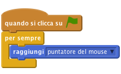
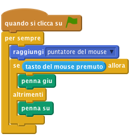
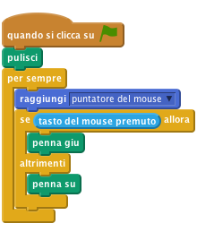
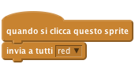
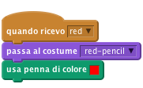
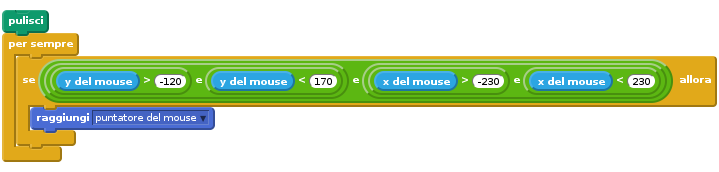
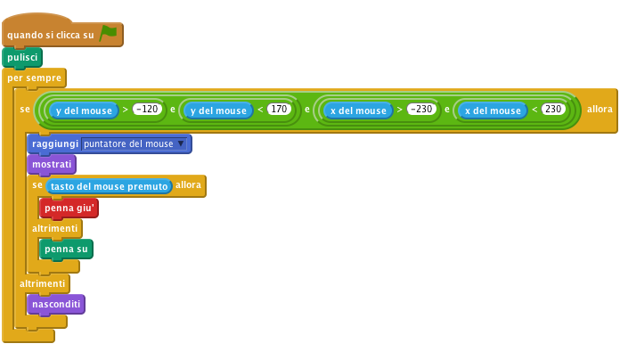

Introduzione
In questo progetto creiamo uno strumento per disegnare e colorare a mano libera. Puoi cambiare il colore della matita, cancellare lo schermo e fare anche degli stampini!!

Passo 1: Trascina e disegna
Inizieremo con una matita che disgna un tratto quando la trascini in giro per lo stage.
Lista delle Attivita’
- Crea un nuovo progetto Scratch. Rimuovi il gatto Felix con click-destro e seleziona cancella.
- Sostituisci lo sfondo con lo sfondo frame.png presente nella cartella Resources del progetto
- Crea un nuovo sprite chiamato green-pencil usando il file green-pencil.png nella cartella Resources del progetto
- Fai click sul tab
Costumie tramiter l’editor cambia il centro dello sprite in modo che coincida con la punta della matita. Per farlo fai click (in alto a destra) sul pulsante chiamatoDefinisci il centro del costumee muovi la linea di centro finche’ coincide con la punta della matita. Creiamo un nuovo script in modo che la matita segua il mouse all’interno dello stage usando un blocco
per sempreed un bloccoraggiungipuntatore del mouse.
Adesso vogliamo che questo sprite funzioni come una matita. Se dai un’occhiata alla sezione Penna nella palette principale, vedrai una serie di utili blocchi. I primi che ci interessano sono penna giu' e penna su
Vogliamo usare il bottone del mouse per controllare la matita. Ogni volta che il bottone del mouse e’ premuto la penna deve lasciare un tratto e viceversa. Possiamo usare un blocco
se...alloraetasto del mouse premuto
Verifica il progetto
Fai click sulla bandierina verde.
- La penna segue il mouse quando lo muovi?
Cosa succede se tieni premuto il bottone del mouse e lo muovi nello stage?
Non ti preoccupare del colore della matita per il momento.
Lista delle Attivita’
Dopo poco lo schermo sara’ pieno di disegni e scarabocchi. Il blocco
pulisciserve proprio a pulire lo schermo.
Verifica il progetto
Fai click sulla bandierina verde.
- L’area di disegno viene cancellata ogni volta che inizi il gioco?
Salva il progetto
Passo 2: Cancelliamo
Lista delle Attivita’
Anziche’ dover fermare e ricominciare tutto il gioco per cancellare lo schermo, aggiungiamo un pulsante che cancella il disegno. Usiamo sempre il blocco pulisci
- Crea un nuovo sprite usando il file cancel-button.png nella cartella Resources del progetto
- Cambia il nome dello sprite in clear
- Posiziona lo sprite nell’angolo inferiore a sinistra
Aggiungi questo script per lo sprite:
Verifica il progetto
Fai click sulla bandierina verde.
- Se fai click sul pulsante clear l’area disegna viene completamente cancellata?
Salva il progetto
Passo 3: Cambiamo colore
Lista delle Attivita’
Per il momento possiamo solo disegnare in blu ma abbiamo bisogno di altri colori per poter esprimere la nostra arte!!! Aggiungiamo degli sprite nella parte inferiore dell’area di disegno. Questi sprite hanno l’aspetto di bottoni colorati. Se facciamo click su uno di essi il colore del tratto della matita cambiera’. Inoltre anche il colore della matita cambiera’ cosi’ sappiamo con quale colore stiamo disegnando.
- Crea un nuovo sprite usando il file red-selector.png nella cartella Resources del progetto e chiamalo red
- Posizionalo nella parte inferiore dell’area di disegno
Quando lo sprite red e’ selezionato inviera’ un messaggio a tutti per far sapere che c’e’ stato un cambio di colore

Si, questo e’ tutto!! Tutta la logica e’ implementata nello script della matita
Seleziona lo sprite pencil e aggiungi un nuovo costume usando il file red-pencil.png nella cartella Resources del progetto. Come per la prima matita imposta il centro dello sprite in modo che coincida con la punta della matita
Aggiungi uno script per la matita. Quando la matita riceve il messaggio red deve cambiare il costume in red-pencil e deve anche cambiare il colore del tratto in rosso (usa il blocco
usa penna di colore)
Suggerimento: se fai click nel quadratino del bloccousa penna di colorepuoi poi selezionare il colore direttamente facendo click sullo sprite red. In questo modo la matita scrivera’ esattamente con lo stesso colore del pulsante di selezione del colore.
Verifica il progetto
Fai click sulla bandierina verde.
Inizia disegnando una linea. Poi fai click sul pulsante rosso and disegna ancora.
- Vedi la matita cambiare colore? Scrive in rosso?
- Scrive esattamente dalla punta della matita?
Salva il progetto
- Ripeti i passaggi sopra per i pulsanti di selezione colore blue, yellow e gree.
Verifica il progetto
Fai click sulla bandierina verde.
- Tutti i pulsanti di selezione colore funzionano?
- Tutti cambiano l’aspetto della matita ed il colore del tratto?
- Tutte le matite scrivono esattamente dalla punta?
Salva il progetto
Passo 4: Limitiamo l’area di disegno
Forse avrai notato che puoi disegnare in tutti i punti dello stage, anche sul bordo. Vogliamo evitare questo comportamento. Vogliamo che sia possibile disegnare solo nell’area centrale dello schermo. Possiamo fare in modo che la matita non esca mai dall’area di disegno, quella in grigio.
Ricordati che in Scratch un punto e’ definito da x e y. L’area di disegno e’ compresa tra 230 e -230 sull’asse delle x e tra 170 e -120 sull’asse delle y. Possiamo usare questi valori in un blocco se per assicurarci che il mouse sia in quest’area prima di muovere la matitia.
- Racchiudi il blocco
raggiungiin un nuovo bloccosee qui controlla che:y del mouse sia maggiore di -120 and minore di 170e chex del mouse sia maggiore di -230 e minore di 230
Nota per implementare questo controllo devi usare diversi operatori e, uno per le due coordinate x del mouse, uno per le due coordinate y del mouse e uno per unire il tutto:

Siccome non possiamo disegnare al difuori dell’area di disegno, possiamo nascondere la matita ogni volta che ne usciamo.
Sostituisci il blocco
secon un bloccose...allora. Usa la stessa condizione per ilsee usa il bloccomostratiper la matita se la condizione ’e vera altrimentinasconditi
Verifica il progetto
Fai click sulla bandierina verde.
- Risci ancora a disegnare nell’area di disegno? Puoi disegnare fuori dell’area di disegno? Cosa succede alla matita quando esci e rientri nell’area di disegno?
Salva il progetto
Passo 5: Gomma
Disegnare delle linee e’ divertente, ma ci sono delle volte che fai un errore e vorresti cancellare con una gomma. Possiamo farlo semplicemente con una matita che scrive in grigio (lo stesso colore dell’area di disegno)
- Aggiungi un nuovo sprite usando il file eraser.png. Rendilo piu’ piccolo se necessario e posizionalo in basso sotto l’area di disegno. Il funzionamento e’ uguale agli altri pulsanti di selezione del colore e percio’ inviera’ un messaggio a tutti che la gomma deve essere usata.
La matita deve ricevere questo messaggio e cambiare il colore del tratto in grigio. Useremo anche un altro costume in modo da visualizzre una gomma al posto della matita. Usa lo stessfo file di prima come costume della matita. Ricordati di impostare bene il centro dello sprite per la gomma.
Verifica il progetto
Fai click sulla bandierina verde.
- La gomma cancella cio’ che hai disegnato?
- Funziona bene anche negli angoli?
- Riesci a passare dalla gomma alla matita e viceversa?
Salva il progetto
Passo 6: Timbrini
Adesso aggiungiamo un timbrino.
Lista delle Attivita’
- Aggiungi un nuovo sprite per il timbrino. Usa qualsiasi immagine che gradisci. Rimpicciolisci lo sprite e posizionalo in basso sotto l’area di disegno. Quando fai click sullo sprite deve inviare un messaggio a tutti
stamp - Aggiungi la stessa immagine come costume per la matita
- Seleziona lo sprite della matita e crea una nuova variabile, solo per questo sprite, chiamata
pencil mode. Useremo questa variabile per capire se stiamo disegnando con la matita o con lo stampino. - Aggiungi un nuovo script che risponda al messaggio e che cambi il costume della matita in timbrino e che imposti la variabile
pencil modea false. - Cambia lo script che risponde al messaggio di selezione del colore (red, green, blue, and eraser) in modo che anche loro impostino la variabile
pencil modea true. - Infine controlla questa variabile quando premiamo il tasto del mouse per capire se deve disegnare una linea o uno stampino. Se
pencil mode= true allora usiamo il bloccopen downgia’ esistente. In caso contrario usiamo il bloccotimbra.
Verifica il progetto
Fai click sulla bandierina verde.
Lo strumento timbrino funziona correttamente?
Cosa succede quando selezioni una delle matite colorate?
Salva il progetto
Ben Fatto!! hai completato l’esercizio base.
Prova queste sfide!
Sfida 1: Matita arcobaleno
Aggiungiamo una matita speciale che disegna con i colori dell’arcobaleno. E’ una matita che non puoi usare normalmente sulla carta, quindi e’ forte far vedere che disegnando con un computer puoi fare delle cose nuove. Il segreto di questa matita speciale e’ nel blocco cambia colore penna di.
Prima di tutto aggiungi, sotto la lavagna, il pulsante di selezione per la matita arcobaleno e poi aggiungi anche il costume arcobaleno alla matita principale:
- Crea un nuovo sprite per il pulsante di selezione e posizionalo in basso sotto la lavagna. Usa il file rainbow-selector.gif nella cartella Resources del progetto. Fai in modo che quando gli fai click sopra invii un messaggio a tutti chiamato
rainbow - Aggiungi lo stesso file come costume della matita principale.
Quello che devi fare e’ creare uno script che cambi il colore del tratto della matita molte volte al secodno ottenendo cosi’ un effetto arcobaleno.(cambia il colore di 5 ogni 0,5 secondi, ma se vuoi puoi anche provare altri valori). Come speigato nella Scratch card chiamata Timer usa un blocco cambia colore penna di 5 al posto del blocco cambia timer di -1 nel ciclo principale.
Devi anche fare in modo che il colore della penna cambi solamente quando la matita arcobaleno e’ stata selezionata altrimenti tutte le matite scriveranno in color arcobaleno! Puoi fare come negli script precedenti quando hai implementato lo stampino. Puoi usare una variabile che chiami rainbowPencil e’ che ha valore true quando selezioni la matita arcobaleno e false in tutti gli altri casi. Ogni volta che lo script risponde al messaggio rainbow puoi impostare la variabile in modo appropriato.
Usa cio’ che hai imparato nel Passo #6 (Timbrini) per controllare l’effetto arcobaleno. Lo script che risponde all messaggio impostera’ due variabili: pencilMode e rainbow Pencil
Salva il progetto
Verifica il progetto
Fai click sulla bandierina verde.
La matita arcobaleno funziona correttamente?
Cosa succede quando selezioni una matita normale?
Sfida 2: Tasti scorciatoia
Anziche’ usare gli appositi tasti selezione sotto la lavagna, puoi usare dei tasti sulla tastiera per selezionare in modo rapido le matite.
Puoi usare un blocco quando si preme il tasto per intercettare la pressione dei tasti della tastiera. Per ogni tasto invia un messaggio a tutti come se si fosse premuto il tasto di selezione con il mouse.Aggiungi questo script allo stage.
Queste sono le scorciatoie usate:
- Cancella tutto - a
- Gomma - e
- Matita rossa - r
- Matita blu - b
- Matita gialla - y
- Matita verde - g
- Matita arcobaleno - w
- Timbrino - s
Verifica il progetto
Fai click sulla bandierina verde.
- Riesci a selezionare tutti gli strumenti tramite i tasti scorciatoia?
- Gli strumenti funzionano correttamente quando seleionati con la tastiera?
- Riesci a selezionare gli strumenti con il mouse e con i pulsanti sotto la lavagna?
Salva il progetto
Sfida 3: Spessore del tratto
Un’altra funzionalita’ che quasi tutti gli strumenti di disegno mettono a disposizione e’ la possibilita’ di cambiare la dimensione del tratto della matita. Facciamolo anche noi!!
Il problema di questa sfida e’ che alle volta devi cambiare il tratto della matita e altre volte devi cambiare la dimensione dello stampino. Dipende da cio’ che stai usando per disegnare.
Crea due nuovi pulsanti di selezione, chiamati bigger and smaller. Usa il costume bigger-selector.gif e smaller-selector.gif nella cartella Resources. Questi due sprite devono rispettivamente inviare un messaggioa tutti chiamato bigger e smaller
Lo script della matita principale deve rispondere a questi due messaggi e cambiare la dimensione della matita di +- 1 o la dimensione dello stampino di +- 10 in base al valore della variabile pencil mode {.blockorange} (usa un bloccose…allora…altrimenti` {.blockyellow} )
Non scordarti di aggiungere anche i tasti scorciatoia. I tasti freccia-su e freccia-giu' sono perfetti per questo scopo.
Salva il progetto
Dovresti aver notato che cambiando la dimensione del timbrino cambia anche la dimensione della matita.
Per evitare questo problema devi impostare la dimensione della matita al 100% ogni volta che viene selezionata.
Puoi anche fare di meglio. Fai in modo che lo stampino si ricordi la sua dimensione prima che selezioni la matita e poi quando selezioni dinuovo lo stampino riprenda le sue dimensioni originali. Il modo piu’ semplice per far cio’ e’ dinuovo usare una variabile chiamata stampSize, che viene aggiornata con la dimensione corrente dello stampino ogni volta che viene ridimensionato. Quando selezioni lo stampino puoi impostare la sua dimensione con il valore di questa variabile.
Verifica il progetto
Fai click sulla bandierina verde.
Lo strumento per il controllo della dimensione della matita funziona correttamente?
Cosa succede se selezioni lo stampino, cambi la sua dimensione e poi selezioni dinuovo la matita?
Salva il progetto
Ben fatto!!! Hai finito con questo esercizio. Adesso divertiti con il tuo nuovo gioco!!!
Ehi, non dimenticare che puoi condividere il tuo gioco con tutti i tuoi amici e familiari. Basta che fai selezioni il menu File e poi Share to website!!